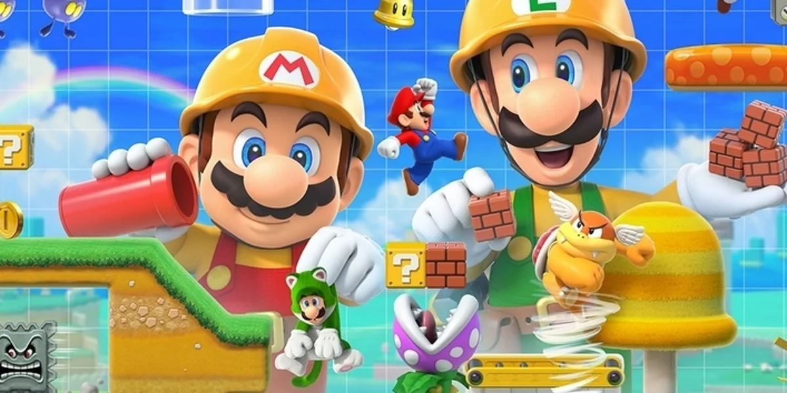
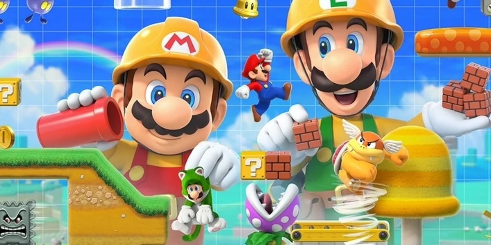

Welcome!
I love creating levels in Super Mario Maker that are both challenging and an experience to play. Here, I'm sharing some of my favorites along with tips and thoughts on design.
Mario Maker Tip
Loading tip...
I love creating levels in Super Mario Maker that are both challenging and an experience to play. Here, I'm sharing some of my favorites along with tips and thoughts on design.
Loading tip...